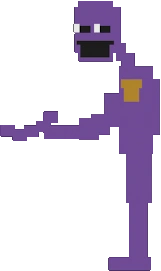

William Afton, também conhecido como *The Purple Guy* ou *Springtrap*, é amplamente aceito como o principal antagonista da série. Ele fundou a Afton Robotics e é responsável por vários assassinatos de crianças, cujas almas supostamente assombram os animatrônicos.
